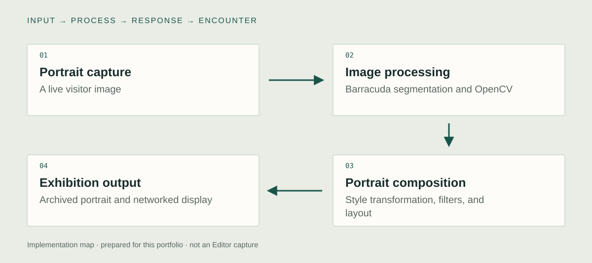

Unity implementation
Barracuda segmentation & OpenCV
I used Barracuda-based person segmentation and Python/OpenCV processing within the portrait pipeline. The separated participant image becomes material for the composed output. This identifies Barracuda’s documented role without assigning every style or filter operation to the same model.

Style transformation & filters
I combined style transformation with visual filtering, framing, and background composition in Unity. These stages produce the historical magazine treatment of the final portrait. Model processing, artistic filters, and layout each contribute a different part of the result.
Four-person exhibition workflow
I connected portrait creation, archival output, and an external display through TCP/UDP communication. The installation supports up to four simultaneous participants. The networking serves a multi-participant exhibition workflow; exact transport roles are retained as a source-configuration detail.

System & design decisions

- 01Portrait capture
A live visitor image
- 02Image processing
Barracuda segmentation and OpenCV
- 03Portrait composition
Style transformation, filters, and layout
- 04Exhibition output
Archived portrait and networked display
AI processing and visual filters
Model-based image processing and artistic filters contribute different parts of the result. The case is about composing those operations into a usable Unity portrait pipeline, rather than presenting every effect as a single AI model.
Composition as part of the system
The transformed face needs to belong to the image's framing, background, and graphic style. The output is a composed portrait, not an isolated inference result.
Move a portrait between processes
Completed portraits move from the creation pipeline to a separate public display. Capture, transformation, output, and presentation each have a distinct responsibility within the visitor experience.
Verification and reuse notes
These are newly prepared checks, not reported production incidents.
- Design decision
- Separate portrait transformation from transport. Barracuda, OpenCV, style processing, filters, and composition form the original image pipeline. The independent TCP example concerns complete-frame delivery to Unity’s main thread.
- Failure case to exercise
- For the independent receiver, split a PNG into small chunks, disconnect midway through a frame, and disable/re-enable while connected. Verify incomplete bytes never replace the displayed portrait.
- Observable evidence
- Show an original portrait through the actual transformation layers. Separately pair Python sender output with the independent Unity receiver’s status and displayed texture.
- Reuse boundary
- The public receiver is one-sender transport code. It excludes original inference, multi-participant routing, UDP, archival storage, and delivery acknowledgements.
Code example
A framed PNG receiver separates TCP reading from texture creation on Unity’s main thread.
PortraitInbox.cs
ReadFully(stream, header, token);
int n = BigEndian(header, 0);
if (n < 24 || n > MaxBytes) throw new InvalidDataException("Invalid frame length.");
var bytes = new byte[n];
ReadFully(stream, bytes, token);
// Backpressure bounds pending frames. Unity never runs on this worker.
s.queue.Add(bytes, token);Implementation notes
- ReadFully reconstructs a length-prefixed frame from the TCP byte stream. Partial reads are not treated as complete images.
- The bounded queue separates network reception from Unity main-thread texture work. Payload size and PNG dimensions are checked before display.
- This is a one-sender transport example. It contains no Barracuda model, style-transfer pipeline, UDP routing, or four-participant installation reconstruction.
Concept
What happens when a contemporary face is translated into the graphic conventions of a historical portrait?
The project draws on early modern Incheon and the visual culture of New Women magazines. A visitor is both the subject of the image and a participant in its construction. The changing gallery places individual portraits within a collectively produced historical fiction.
Development
Retrospective planning notes, prepared for this portfolio.
Choose the visual reference
Identify the historical image conventions the participant should be able to enter.
Separate the transformation stages
Plan the relationship between model processing, image filtering, and the final portrait layout.
Follow a portrait through the venue
Rehearse capture, transformation, local output, and arrival on the public display as one visitor experience.
Further research
How do different transformation layers affect recognition and identification with a historical portrait?
Vary: The contribution of style transformation and graphic filtering.
Hold consistent: Portrait input, target composition, and display conditions.
Proposed comparison. No controlled study or measured effect is reported.